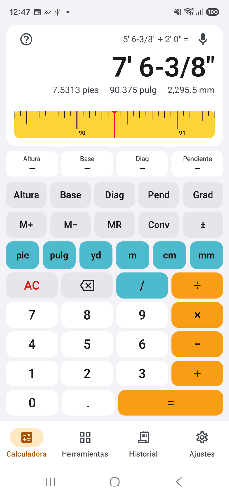
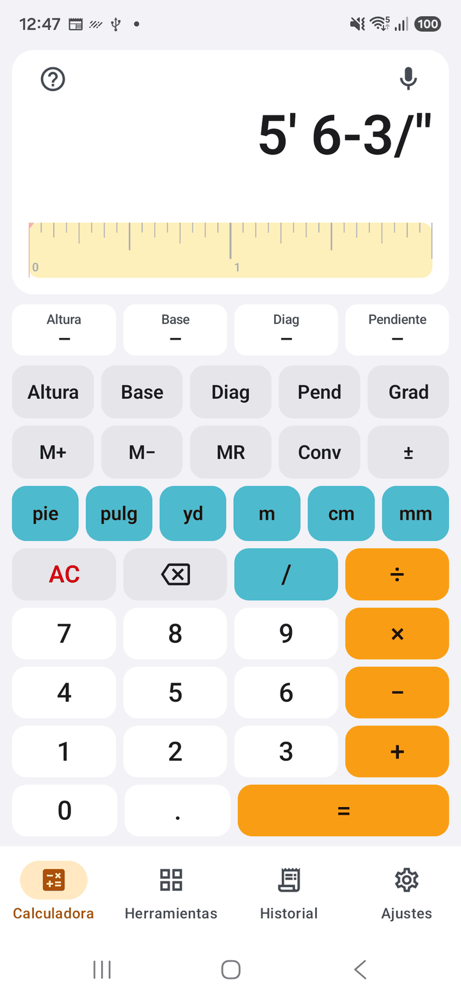
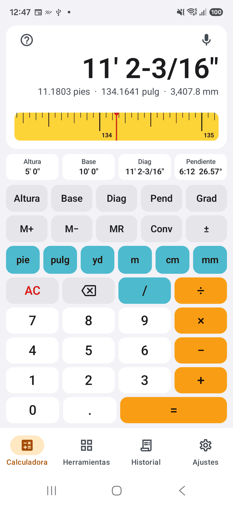
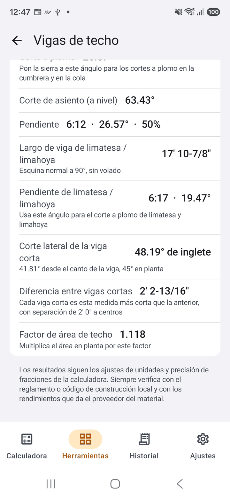
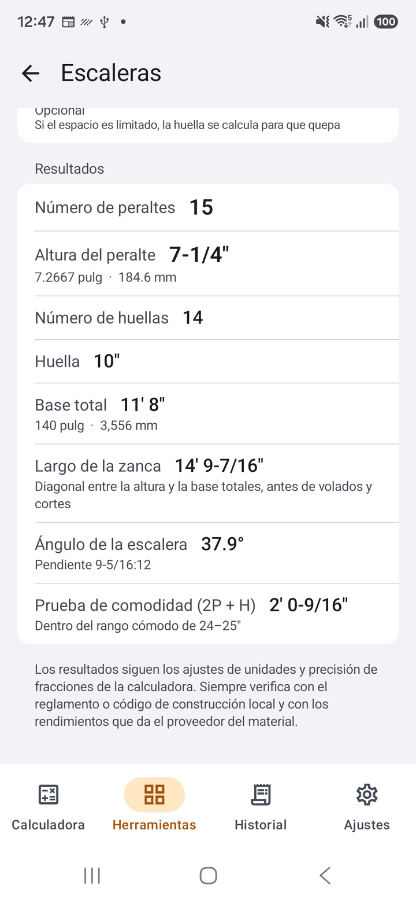
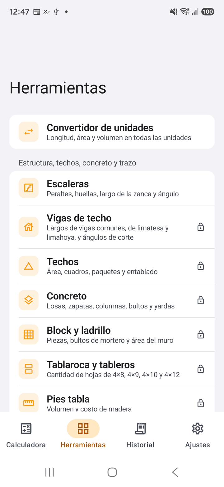
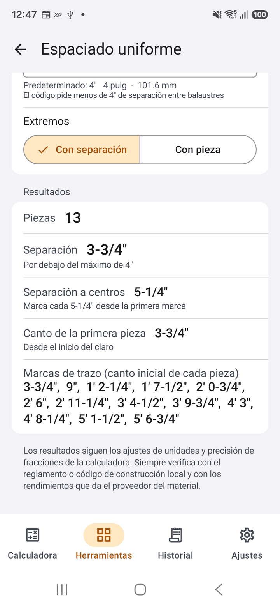
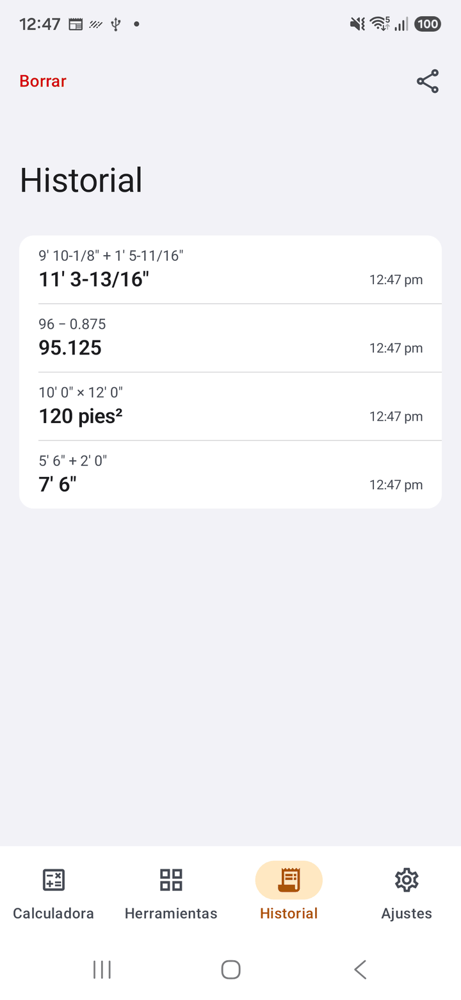
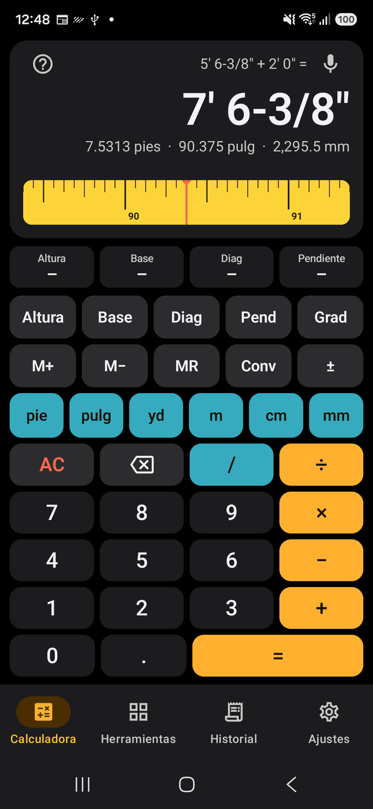

FootInch es la calculadora de pies, pulgadas y fracciones hecha para armadores, carpinteros, cuadrillas de concreto, techadores y para quien hace sus propios proyectos en serio. Escribe las medidas como las lees en la cinta, ve la marca en una regla de verdad y resuelve vigas de techo, escaleras, concreto y trazos sin pagar una cuota cada año.
La calculadora, el historial, el convertidor y la herramienta de escaleras son gratis. FootInch Pro desbloquea todas las herramientas con un solo pago de US$4.99 en tu cuenta de Google.
¿Tienes iPhone o iPad? FootInch también está en el App Store →
Esta es la lógica de captura real de FootInch, funcionando en tu navegador. Toca las teclas de abajo o usa tu teclado: números, f o ' para pies, i o " para pulgadas, / para fracciones, + − * y Enter.
5 pie 6 pulg 3 / 8. La pantalla muestra 5' 6-3/8".+ 2 pie =. Te da 7' 6-3/8", y la regla muestra dónde cae la marca.× 4 pie =. Las unidades se ajustan solas: 30.125 pies².Todo lo que hace una calculadora de construcción de bolsillo, más lo que un teléfono hace mejor: una regla que muestra tu marca, un historial que puedes tocar y tu voz.
Escribe 5 pie 6 pulg 3/8, no decimales. Combínalo con medidas métricas, yardas y fracciones sin unidad. Precisión de 1/2" a 1/64".
La pantalla muestra un tramo de cinta métrica con una marca roja en tu resultado, para que lo pases a tu cinta sin volver a leer fracciones.
Largo × largo da un área; por otro largo, un volumen. Toca cualquier unidad para convertir: yardas cúbicas para el camión de concreto, pies² para el pedido de piso.
Ingresa dos y lee el resto. La pendiente como 6:12, en grados o en porcentaje. Saca escuadras, vigas de techo y zancas en segundos.
¿Traes las manos ocupadas? Di “cinco pies seis y tres octavos más dos pies”. Tu teléfono reconoce lo que dices con el reconocimiento de voz de Android en el dispositivo; nada se sube a internet.
Cada resultado se guarda en un historial que puedes tocar para volver a usarlo o compartirlo. Mantén presionado cualquier resultado para copiarlo en pies-pulgadas, decimales o milímetros.
Teclas grandes con texto oscuro sobre colores vivos, vibración al tocar, barra de navegación lateral y teclado de tamaño completo en tabletas, y modo oscuro para la camioneta a las 5 de la mañana.
Mira tu marca en una cinta de verdad

Escribe como lees la cinta

Altura, base, diagonal, pendiente

Vigas comunes, limatesas y cortas

Escaleras con revisión del código de construcción

13 herramientas

Trazo de balaustres y tablillas

Un historial de cada resultado

Modo oscuro
Cada herramienta acepta las medidas como las dices (9' 1", 109, 2768 mm) y te muestra cómo las leyó antes de responder. Los resultados se actualizan mientras escribes, justo arriba del teclado.
Una calculadora no debería cobrarte cada año. FootInch Pro es una sola compra dentro de la app a través de Google Play, ligada a tu cuenta de Google, así que se va contigo a tu próximo teléfono. Google Play te muestra el precio en tu moneda.
No. Todo funciona en tu dispositivo, incluido el reconocimiento de voz. Solo usa la red para Google Play cuando compras o restauras FootInch Pro.
Toca 5, pie, 6, pulg, 3, /, 8. Un número después de pie se toma como pulgadas, y una fracción después de pulg es parte de esa pulgada. Los campos de las herramientas también aceptan medidas escritas: 5' 6 3/8", 66.375, 6-3/8 y 1676 mm funcionan.
Un tramo de dos pulgadas de cinta métrica centrado en tu resultado, con marcas cada 1/16", los números de pulgadas acumuladas y las marcas de pie en rojo, igual que la cinta que traes en el cinturón. En métrico muestra milímetros y centímetros.
FootInch solo usa el reconocimiento de voz de Android en el dispositivo, así que el audio se convierte en texto en tu teléfono y nunca se sube a internet. Para eso necesitas Android 12 o posterior con el paquete de voz en español sin conexión; en un teléfono que no lo tenga, FootInch apaga la entrada por voz en lugar de mandar tu voz a un servicio en la nube.
El motor y cada herramienta tienen pruebas automáticas con ejemplos resueltos: una viga de techo de 6:12 sobre un claro de 24', una escalera con altura total de 9' 1" y una moldura de corona de 38° en una esquina de 90°. Las mismas pruebas corren en la app de iPhone, así que las dos dan los mismos resultados. Las fórmulas están publicadas en la página de soporte para que las compruebes.
Sí: el mismo motor, las mismas 13 herramientas y el mismo diseño, hecha de forma nativa para Android. La app de iPhone en español llega con la versión 1.1. Las compras son por tienda, así que FootInch Pro comprado en Google Play desbloquea la app de Android, y una compra en el App Store desbloquea la de iPhone.
No. FootInch Pro es un pago único y así se va a quedar.
Sí, con teclado de tamaño completo, barra de navegación lateral y atajos para teclado físico.
Gratis para teléfonos y tabletas Android. Pro es un solo pago, para siempre.
Descarga FootInch en Google Play ¿Tienes iPhone o iPad? FootInch también está en el App Store →